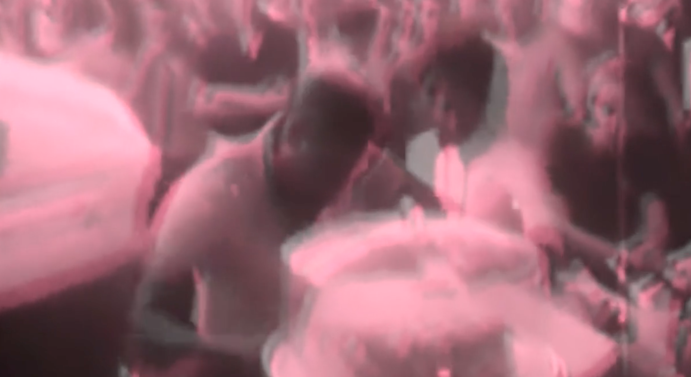

Time To Leave
← Back to Film + Video
Synopsis
In this experimental documentary-essay, filmmaker Léwuga Benson assembles and alters archival footage and recordings to provocatively reiterate a history of violent oppression and surveillance of Black people. Oscillating between the past and present, Benson points to the chronic nature of racism and the continual need to challenge assumptions about power and privilege.
Screenings
• Media Study department's film festival, University at Buffalo, Buffalo, NY / 2019
• Buffalo Internaational Film Festival, Buffalo, NY / 2020
• Transient Visions Film Festival / 2020
• African Film Festival, 2020
Gallery

